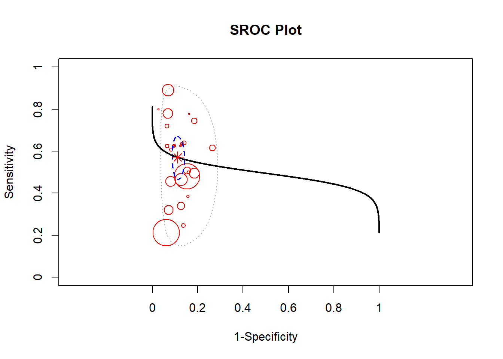
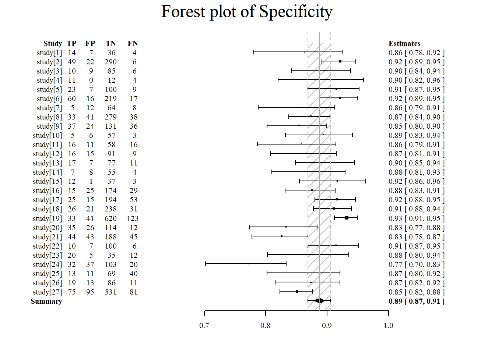

Chapter 4 Statistics
This section is not intended as a textbook on statistics. Rather it demonstrates regression approaches that can be used including sample size estimation, R codes provided.
4.1 Univariable analyses
4.1.1 Parametric tests
T-test is the workhorse for comparing if 2 datasets are have the same distribution. Performing t-test in R requires data from 2 columns: one containing the variables for comparison and one to label the group. There are different forms of t-test depending on whether the two samples are paired or unpaired. In general, the analysis takes the form of \(t=\frac{\mu_1 - \mu_2}{variance}\). It is recommended to check the distribution of the data by using histogram. For this exercise, we will use the simulated data from ECR trials. The grouping variable is the trial assignment.
4.1.2 Non-parametric tests
Chi-squared and Fisher-exact tests can be done by using the table function for setting up the count data into 2 x 2 contingency table or confusion matrix. The formula for the Chi-squared test takes on a familiar form \(\chi^2=\frac{(observed-expected)^2}{expected}\). In this example we will use the data above.
The Wilcoxon rank sum test is performed with continuous data organised in the same way as the t-test. There are several different approaches to performing Wilcoxon rank sum test. The coin package allows handling of ties.
4.2 Regression
There are many different form of regression methods. A key principle is that the predictors are independent of each others. This issue will be expand on in the later in the section on collinearity. Special methods are required when the predictors are collinear.
4.2.1 Linear (least square) regression
Least square regression uses the geometric properties of Euclidean geometry to identify the line of best. The sum of squares \(SSE\) is \(\sum(observed-expected)^2\). The \(R^2\) is a measure of the fit of the model. It is given by \(1-\frac{SS_(res)}{SS_(total)}\). Low \(R^2\) indicates a poorly fitted model and high \(R^2\) indicates excellent fitting. The assumption here is that the outcome variable is a continuous variable.
## Warning: package 'ggplot2' was built under R version 4.0.5load("./Data-Use/world_stroke.Rda")
ggplot(world_sfdf, aes(x=LifeExpectancy,y=MeanLifetimeRisk))+geom_smooth(method="lm", aes(Group=Income, linetype=Income))+geom_point()+xlab("Life Expectancy")## Warning: Ignoring unknown aesthetics: Group## `geom_smooth()` using formula 'y ~ x'## Warning: Removed 71 rows containing non-finite values (stat_smooth).## Warning: Removed 71 rows containing missing values (geom_point).4.2.2 Logistic regression
For outcome that are binary in nature such as yes or no, then least square regression is not appropriate. There are no close form solution for this analysis and a numerical approach using maximum likelihood approach is needed. When examining the results of logistic regression one is often enchanted by the large odds ratio. It is important to look at the metrics of model calibration (discussed below). A clue to a poorly calibrated model is the observation that the width of the confidence interval for odds ratio is wide.
4.2.2.1 Discrimination and Calibration
A high _\(R^2\) suggests that the linear regression model is well calibrated. This metric is often not displayed but should be sought when interpreting the data.
The areas under the receiver operating characteristic curve (AUC) is used to assess how well the models discriminate between those who have the disease and those who do not have the disease of interest. An AUC of 0.5 is classified as no better than by chance; 0.8 to 0.89 provides good (excellent) discrimination, and 0.9 to 1.0 provides outstanding discrimination. This rule of thumb about interpreting AUC when reading the literature is language the authors used to describe the AUC. This test of discrimination is not synonymous with calibration. It is possible to have a model with high discrimination but poor calibration (Diamond 1992).
Calibration of logistic regression model is performed using the Hosmer–Lemeshow goodness-of-fit test and the Nagelkerke generalized R2. A model is well calibrated when the Hosmer–Lemeshow goodness-of-fit test shows no difference between observed and expected outcome or P value approaching 1. A high generalized R2 value suggests a well-calibrated regression model.
4.2.2.2 Measuring Improvement in Regression Models
The net reclassification improvement (NRI) and integrated discrimination improvement (IDI) have been proposed as more sensitive metrics of improvement in model discrimination.The NRI can be considered as a percentage reclassification for the risk categories and the IDI is the mean difference in predicted probabilities between 2 models (constructed from cases with disease and without disease). The NRI and IDI scores are expressed as fractions and can be converted to percentage by multiplying 100.The continuous NRI and IDI were performed using PredictABEL . (Phan et al. 2017)(Phan et al. 2016)
4.2.2.3 Shapley value
We can use ideas from game theory relating to fair distribution of profit in coalition games; the coalition (co-operative) game in this case can be interpreted as contribution of the covariates to the model. The Shapley value regression method calculates the marginal contribution of each covariate as the average of all permutations of the coalition of the covariates containing the covariate of interest minus the coalition without the covariate of interest. The advantage of this approach is that it can handle multicollinearity (relatedness) among the covariates.
4.2.2.3.1 Interaction
When describing interaction terms it is recommended that the results be expressed as β coefficients rather than as odds ratio.
4.2.2.4 Propensity matching
A common misconception is that the multiple regression adjust for imbalance in covariates. This issue was observed in the pivotal NINDS alteplase trial. The results of the trial has since been accepted with re-analysis of this trial.
Propensity matchine is an important technique to adjust for imbalance in covariates between 2 arms. There are concerns with mis-use of this technique such as difference in placebo arms from multiple sclerosis trials (Signori et al. 2020). It is proposed that this technique should be used only if all the confounders are measurable. This situation may not be satisfied if the data were accrued at different period, in different continent etc.
4.3 Special types of regression
4.3.1 Ordinal regression
Ordinal regression is appropriate when the outcome variable is in the form of ordered categorical values. For example, the Rankin scale of disability is bounded between the values of 0 and 6. This type of analysis uses the proportional odds model and the requirement for this model is stringent. When examining results of ordinal regression check that the authors provide this metric, the Brant test. The Brant test assesses the parallel regression assumption. Ordinal regression is performed using polr function in MASS library. The Brant test is available in the Brant library.
4.3.2 Survival analysis
Survival analysis is useful when dealing with time to event data. The Cox model assesses the hazard of outcome between two groups. The assumption of this model is that the hazard between each arm is proportional (Stensrud and Hernan 2020). The proportional hazard model can be tested (Grambsch and Therneau 1994)
library(survival)
data("lung")
#data from survival package on NCCTG lung cancer trial
#https://stat.ethz.ch/R-manual/R-devel/library/survival/html/lung.html
#time in days
#status censored=1, dead=2sex:
#sex:Male=1 Female=2
sfit<- coxph(Surv(time, status) ~ age+sex+ph.ecog, data = lung)
summary(sfit)## Call:
## coxph(formula = Surv(time, status) ~ age + sex + ph.ecog, data = lung)
##
## n= 227, number of events= 164
## (1 observation deleted due to missingness)
##
## coef exp(coef) se(coef) z Pr(>|z|)
## age 0.011067 1.011128 0.009267 1.194 0.232416
## sex -0.552612 0.575445 0.167739 -3.294 0.000986 ***
## ph.ecog 0.463728 1.589991 0.113577 4.083 4.45e-05 ***
## ---
## Signif. codes: 0 '***' 0.001 '**' 0.01 '*' 0.05 '.' 0.1 ' ' 1
##
## exp(coef) exp(-coef) lower .95 upper .95
## age 1.0111 0.9890 0.9929 1.0297
## sex 0.5754 1.7378 0.4142 0.7994
## ph.ecog 1.5900 0.6289 1.2727 1.9864
##
## Concordance= 0.637 (se = 0.025 )
## Likelihood ratio test= 30.5 on 3 df, p=1e-06
## Wald test = 29.93 on 3 df, p=1e-06
## Score (logrank) test = 30.5 on 3 df, p=1e-064.3.3 Quantile regression
Quantile regression is appropriate when the distribution of the data is non-normal and it is more appropriate to look at the conditional median of the dependent variable. There are several libraries for this task quantreg and bayesian libraries. In the example below, the life time risk of stroke is regresed against life expectancy using lest square and quantile regression.
## Loading required package: SparseM##
## Attaching package: 'SparseM'## The following object is masked from 'package:base':
##
## backsolve##
## Attaching package: 'quantreg'## The following object is masked from 'package:survival':
##
## untangle.specialsload("./Data-Use/world_stroke.Rda")
#quantile
rqfit <- rq( MeanLifetimeRisk~ LifeExpectancy, data = world_sfdf)
rqfit_sum<-summary(rqfit)
#least square
lsfit<-lm(MeanLifetimeRisk~LifeExpectancy,data=world_sfdf)
lsfit_sum<-summary(lsfit)
#plot
ggplot(world_sfdf, aes(x=LifeExpectancy,y=MeanLifetimeRisk))+
#add fitted line for least square
geom_abline(intercept =lsfit_sum$coefficients[1], slope=lsfit_sum$coefficients[2],color="red")+
#add fitted line for quantile regression
geom_point()+xlab("Life Expectancy")+
geom_abline(intercept =rqfit_sum$coefficients[1], slope=rqfit_sum$coefficients[2],color="blue")+
#annotate least square
annotate("text",x=60, y=27,label=paste0("least square =",round(lsfit_sum$coefficients[1],2)," + ",round(lsfit_sum$coefficients[2],2)," x ","Life Expectancy"),color="red")+
#annotae quantile regression
annotate("text",x=75, y=12,label=paste0("quantile =",round(rqfit_sum$coefficients[1],2), " + ", round(rqfit_sum$coefficients[2],2)," x ","Life Expectancy"),color="blue")## Warning: Removed 71 rows containing missing values (geom_point).
4.3.4 Penalised regression
We used penalised logistic regression (PLR) to assess the relationship between the ASPECTS regions and stroke disability (binary outcome) (Phan et al. 2013). PLR can be conceptualized as a modification of logistic regression. In logistic regression, there is no algebraic solution to determine the parameter estimate (β coefficient) and a numerical method (trial and error approach) such as maximum likelihood estimate is used to determine the parameter estimate. In certain situations overfitting of the model may occur with the maximum likelihood method. This situation occurs when there is collinearity (relatedness) of the data. To circumvent this, a bias factor is introduced into the calculation to prevent overfitting of the model. The tuning (regularization) parameter for the bias factor is chosen from the quadratic of the norms of the parameter estimate. This method is known as PLR. This method also allows handling of a large number of interaction terms in the model. We employed a forward and backward stepwise PLR that used all the ASPECTS regions in the analysis, calling on the penalized function in R programming environment. This program automatically assessed the interaction of factors in the regression model in the following manner. The choice of factors to be added/deleted to the stepwise regression was based on the cost complexity statistic. The asymmetric hierarchy principle was used to determine the choice of interaction of factors. In this case, any factor retained in the model can form interactions with others that are already in the model and those that are not yet in the model. In this analysis, we have specified a maximum of 5 terms to be added to the selection procedure. The significance of the interactions was plotted using a previously described method. We regressed the dichotomized mRS score against ASPECTS regions, demographic variables (such as age and sex), physiological variables (such as blood pressure and serum glucose level) and treatment (rt-PA). The results are expressed as β coefficients rather than as odds ratio for consistency due to the presence of interaction terms.
4.3.4.0.1 Non-negative regression
In certain situations, it is necessary to constrain the analysis so that the regression coefifcients are non-negative. For example, when regressing brain regions against infarct volume, there is no reason believe that a negative coefficient attributable to a brain region is possible. Non-negative regression can be performed in R using nnls.
4.3.5 Poisson regression
Poisson regression is used when dealing with number of event over time or distance such as number of new admissions or new cases of hepatitis or TIA over time. An assumption of the Poisson distribution is that the mean λ and variance λ are the same.
A special case of Poisson regression is the negative binomial regression. This latter method is used when the variance is greater than the mean pf the data or over-dispersed data. Negative binomial regression can be applied to number of ‘failure’ event over time. Here ‘failure’ has a lose definition and can be stroke recurrence after TIA or cirrhosis after hepatitis C infection.
Zero-inflated data occurs when there is an abundance of zeroes in the data (true and excess zeroes).
4.3.6 MARS
Multivariate adaptive regression spline (MARS) is a non-linear regression method that fits a set of splines (hinge functions) to each of the predictor variables i.e. different hinge function for different variables (Friedman and Roosen 1995). As such, the method can be used to plot the relationship between each variable and outcome. Use in this way, the presence of any threshold effect on the predictors can be graphically visualized. The MARS method is implemented in R programming environment in the earth package.
4.3.7 Conditional logistic regression
4.3.8 Mixed modelling
In a standard regression analysis, the data is assumed to be random. Mixed models assume that there are more than one source of random variability in the data. This is expressed in terms of fixed and random effects. Mixed modeling is a useful technique for handling multilevel or group data. The intraclass correlation (ICC) is used to determine if a multilevel analysis is necessary ie if the infarct volume varies among the surgeon or not. ICC is the between group variance to the total variance. If the ICC approaches zero then a simple regression model would suffice.
There are several R packages for performing mixed modling such as lme4. An example of mixed modeling in metaregression is illustrated below in the section on Metaanalysis.
4.3.8.1 Random intercept model
In a random intercept or fixed slope multilevel model the slope or gradient of the fitted lines are assumed to be parallel to each other and the intercept varies for different groups.
4.3.9 Trajectory modelling
Trajectory analysis attempts to group the behaviour of the subject of interest over time. There are several different approaches to trajectory analysis: data in raw form or after orthonal transformation of the data in principal component analysis. Trajectory analysis is different from mixed modelling in that it examines group behaviour. The output of trajectory analysis is only the beginning of the modeling analysis. For example, the analysis may identify that there are 3 groups. These groups are labelled as group A, B and C. The next step would be to use the results in a modelling analysis of your choice.
A useful library for performing trajectory analysis is akmedoids. This library anchored the analysis around the median value. The analysis requires the data in long format. The traj library is similar to the one in Stata. It uses several steps including factor and cluster analyses to idetify groups. The traj model prefers data in wide format.
4.3.10 Multinomial modelling
Multinomial modelling is used when the outcome categorical variables are not ordered. This situation can occur when analysis involves choice outcome (choices of fruit: apple, orange or pear). In this case, the log odds of each of the categorical outcomes are analysed as a linear combination of the predictor variables. The nnet library have functions for performing this analysis.
4.4 Sample size estimation
Clinicians are often frustrated about sample size and power estimation for a study, grant or clinical trial. This aspect is scrutinised by ethics committee and in peer review process for journals. Luckily, R provides several packages for sample size amd power estimation: pwr library. Cohen has written reference textbook on this subject (Cohen 1977).
4.4.1 Proportion
library(pwr)
#ttest-d is effect size
#d = )mean group1 -mean group2)/variance
pwr.t.test(n=300,d=0.2,sig.level=.05,alternative="greater") ##
## Two-sample t test power calculation
##
## n = 300
## d = 0.2
## sig.level = 0.05
## power = 0.7886842
## alternative = greater
##
## NOTE: n is number in *each* groupWe provided an example below for generating power of clinical trial. Examples are taken from a paper on sample size estimation for phase II trials (Phan et al. 2006).
library(pwr)
#h is effect size. effect size of 0.5 is very large
#sample size
pwr.2p.test(h=0.5,n=50,sig.level=0.05,alternative="two.sided")##
## Difference of proportion power calculation for binomial distribution (arcsine transformation)
##
## h = 0.5
## n = 50
## sig.level = 0.05
## power = 0.705418
## alternative = two.sided
##
## NOTE: same sample sizes##
## Difference of proportion power calculation for binomial distribution (arcsine transformation)
##
## h = 0.1
## n = 50
## sig.level = 0.05
## power = 0.07909753
## alternative = two.sided
##
## NOTE: same sample sizesThe ouput of the sample size calculation can be put into a table or plot.
library(pwr)
#pwr.2p.test(h=0.3,n=80,sig.level=0.05,alternative="two.sided")
h <- seq(.1,.5,.1) #from 0.1 to 0.3 by 0.05
nh <- length(h) #5
p <- seq(.3,.9,.1)# power from 0.5 to 0.9 by 0.1
np <- length(p) #9
# create an empty array 9 x 5
samplesize <- array(numeric(nh*np), dim=c(nh,np))
for (i in 1:np){
for (j in 1:nh){
result <- pwr.2p.test(n = NULL, h = h[j],
#result <- pwr.r.test(n = NULL, h = h[j],
sig.level = .05, power = p[i],
alternative = "two.sided")
samplesize[j,i] <- ceiling(result$n)
}
}
samplesize## [,1] [,2] [,3] [,4] [,5] [,6] [,7]
## [1,] 412 583 769 980 1235 1570 2102
## [2,] 103 146 193 245 309 393 526
## [3,] 46 65 86 109 138 175 234
## [4,] 26 37 49 62 78 99 132
## [5,] 17 24 31 40 50 63 85#graph
xrange <- range(h)
yrange <- round(range(samplesize))
colors <- rainbow(length(p))
plot(xrange, yrange, type="n",
xlab="Effect size (h)",
ylab="Sample Size (n)" )
# add power curves
for (i in 1:np){
lines(h, samplesize[,i], type="l", lwd=2, col=colors[i])
}
# add annotation (grid lines, title, legend)
abline(v=0, h=seq(0,yrange[2],50), lty=2, col="grey89")
abline(h=0, v=seq(xrange[1],xrange[2],.02), lty=2,
col="grey89")
title("Sample Size Estimation\n Difference in Proportion")
legend("topright", title="Power", as.character(p),
fill=colors)
4.4.1.1 Non-inferiority
Non-inferiority trials may offer information in a way that a traditional superiority design do not. The design may be interested in other aspect of the treatment such as cost and lower toxicity (Kaji and Lewis 2015). Examples of non-inferiority trial designs include antibiotics versus surgery for appendicitis (Salminen et al. 2015). There are concerns with reporting of noninferiority trial. Justification for the margin provided in 27.6% (Gopal et al. 2015). The following describes a trial design where it’s expected that drug will result in a certain outcome p1 and the control arm p2 and the ratio of subject in treatment to control arm is k. The difference in outcome is delta. The margin is defined as non-inferior if <0.
library(TrialSize)
TwoSampleProportion.NIS(alpha=.05,
beta=.8,
p1=.6,
p2=.7,
k=1,
delta = .1,
margin=-.2
)## [1] 3.2259114.4.2 Logistic regression
library(powerMediation)
#continuous predictor
#p1=event rate
powerLogisticCon(n=317, p1=0.5, OR=exp(0.405), alpha=0.05)## [1] 0.95006114.4.3 Survival studies
Sample size for survival studies can be performed using powerSurvEpi or gsDesign.
library(powerSurvEpi)
#sample size
ssizeEpi.default(power = 0.80,
theta = 2,
p = 0.408 ,
psi = 0.15,
rho2 = 0.344^2,
alpha = 0.05)## [1] 512## [1] 1#Amarenco NEJM 2020 #equal sample size k=1
ssizeCT.default(power = 0.8, k = .8, pE = 0.085,
pC = 0.109,
RR = 0.78, alpha = 0.05)## nE nC
## 2417 30214.5 Metaanalysis
During journal club, junior doctors are often taught about the importance of metaanalysis. It is worth knowing how to perform a metaanalysis in order to critique the metaanalysis. It is not well known outside of statistics journal that the bivariate analysis is the preferred method of metaanalysis of diagnostic study (Reitsma et al. 2005). By contrast, the majority of metaanalysis of diagnostic study uses the univariate method of Moses and Littenberg (Moses, Shapiro, and Littenberg 1993). This issue will be expanded below.
4.5.1 PRISMA
The PRISMA statement is useful for understanding the search strategy and the papers removed and retained in the metaanalysis. An example of generating the statement is provided below in R. The example given here is from a paper on the use of spot sign to predict enlargment of intracerebral hemorrhage (Phan et al. 2019).
4.5.2 Metaanalysis of proportion
This is an example of metaanalysis of stroke recurrence following management in rapid TIA clinic. A variety of different methods for calculating the 95% confidence interval of the binomial distribution. The mean of the binomial distribution is given by p and the variance by \(\frac{p \times (1-p)}{n}\). The term \(z\) is given by \(1-\frac{\alpha}{2}\) quantile of normal distribution. A standard way of calculating the confidence interval is the Wald method \(p\pm z\times \sqrt{\frac{p \times(1-p)}{n}}\). The Freeman-Tukey double arcsine transformation tries to transform the data to a normal distribution. This approach is useful for handling when occurence of event is rare. The exact or Clopper-Pearson method is suggested as the most conservative of the methods for calculating confidence interval for proportion. It is based on cumulative properties of the binomial distribution. The Wilson method has similarities to the Wald method. It has an extra term \(z^2/n\). There are many different methods for calculating the confidence interval for proportions. Investigators such as Agresti proposed that approximate methods are better than exact method (Agresti and Coull 1998). Brown and colleagues proposed the use of the Wilson method (Brown, Cai, and DasGupta 2001)
## Warning: package 'metafor' was built under R version 4.0.5## Loading required package: Matrix##
## Loading the 'metafor' package (version 3.0-2). For an
## introduction to the package please type: help(metafor)#create data frame dat
#xi is numerator
#ni is denominator
dat <- data.frame(model=c("melbourne","paris","oxford","stanford","ottawa","new zealand"),
xi=c(7,7,6,2,31,2),
ni=c(468,296, 281,223,982,172))
#calculate new variable pi base on ratio xi/ni
dat$pi <- with(dat, xi/ni)
#Freeman-Tukey double arcsine trasformation
dat <- escalc(measure="PFT", xi=xi, ni=ni, data=dat, add=0)
res <- rma(yi, vi, method="REML", data=dat, slab=paste(model))
#create forest plot with labels
forest(res, transf=transf.ipft.hm, targs=list(ni=dat$ni), xlim=c(-1,1.5),refline=res$beta[1],cex=.8, ilab=cbind(dat$xi, dat$ni), ilab.xpos=c(-.6,-.4),digits=3)
op <- par(cex=.75, font=2)
text(-1.0, 7.5, "model ",pos=4)
text(c(-.55,-.2), 7.5, c("recurrence", " total subjects"))
text(1.4,7.5, "frequency [95% CI]", pos=2)Figure 4.1: Stroke recurrence after TIA clinic
Exact 95% confidence interval is provided below using the data above. This solution was provided on stack overflow.
tmp <- t(sapply(split(dat, dat$model), function(x) binom.test(x$xi, x$ni)$conf.int))
dat$ci.lb <- tmp[,1] #adding column to data frame dat
dat$ci.ub <- tmp[,2] #adding column to data frame dat
res <- rma.glmm(measure="PLO", xi=xi, ni=ni, data=dat)
par(mar=c(5,4,1,2))
with(dat, forest(yi, ci.lb=ci.lb, ci.ub=ci.ub, ylim=c(-1.5,8), xlim=c(-.5,1), refline=predict(res, transf=transf.ilogit)$pred))
addpoly(res, row=-1, transf=transf.ilogit)
abline(h=0)
text(-1.0, 7.5, "Model", pos=4)
text(c(-.8,-.2), 7.5, c("recurrence", " total subjects"))
text( 1, 7.5, "Proportion [95% CI]", pos=2)Figure 4.2: Stroke recurrence after TIA clinic-exact 95% CI
4.5.3 Bivariate Metaanalysis
The univariate method of Moses-Shapiro-Littenberg combines these measures (sensitivity and specificity) into a single measure of accuracy (diagnostic odds ratio)(Moses, Shapiro, and Littenberg 1993) . This approach has been criticized for losing data on sensitivity and specificity of the test. Similar to the univariate method, the bivariate method employs a random effect to take into account the withinstudy correlation (Reitsma et al. 2005). Additionally, the bivariate method also accounts for the between-study correlation in sensitivity and specificity. Bivariate analysi is performed using mada package.
The example below is taken from a metaanalysis of spot sign as predictor expansion of intracerebral hemorrhage (Phan et al. 2019). The data for this analysis is available in the Data-Use sub-folder.
## Loading required package: mvtnorm## Loading required package: ellipse##
## Attaching package: 'ellipse'## The following object is masked from 'package:graphics':
##
## pairs## Loading required package: mvmeta## This is mvmeta 1.0.3. For an overview type: help('mvmeta-package').##
## Attaching package: 'mvmeta'## The following object is masked from 'package:metafor':
##
## blup##
## Attaching package: 'mada'## The following object is masked from 'package:metafor':
##
## forestDat<-read.csv("./Data-Use/ss150718.csv")
#remove duplicates
dat<-subset(Dat, Dat$retain=="yes")
(ss<-reitsma(dat))## Call: reitsma.default(data = dat)
##
## Fixed-effects coefficients:
## tsens tfpr
## (Intercept) 0.2548 -1.9989
##
## 27 studies, 2 fixed and 3 random-effects parameters
## logLik AIC BIC
## 52.0325 -94.0650 -84.1201## Call: reitsma.default(data = dat)
##
## Bivariate diagnostic random-effects meta-analysis
## Estimation method: REML
##
## Fixed-effects coefficients
## Estimate Std. Error z Pr(>|z|) 95%ci.lb 95%ci.ub
## tsens.(Intercept) 0.255 0.152 1.676 0.094 -0.043 0.553 .
## tfpr.(Intercept) -1.999 0.097 -20.664 0.000 -2.189 -1.809 ***
## sensitivity 0.563 - - - 0.489 0.635
## false pos. rate 0.119 - - - 0.101 0.141
## ---
## Signif. codes: 0 '***' 0.001 '**' 0.01 '*' 0.05 '.' 0.1 ' ' 1
##
## Variance components: between-studies Std. Dev and correlation matrix
## Std. Dev tsens tfpr
## tsens 0.692 1.000 .
## tfpr 0.400 -0.003 1.000
##
## logLik AIC BIC
## 52.033 -94.065 -84.120
##
## AUC: 0.858
## Partial AUC (restricted to observed FPRs and normalized): 0.547
##
## HSROC parameters
## Theta Lambda beta sigma2theta sigma2alpha
## -1.217 2.823 -0.548 0.138 0.556## $AUC
## [1] 0.8576619
##
## $pAUC
## [1] 0.5474316
##
## attr(,"sroc.type")
## [1] "ruttergatsonis"## Mean Median 2.5% 97.5%
## posLR 4.750 4.740 3.790 5.870
## negLR 0.494 0.494 0.413 0.578
## invnegLR 2.040 2.030 1.730 2.420
## DOR 9.760 9.580 6.620 13.7004.5.4 Metaregression
##
## Attaching package: 'lubridate'## The following objects are masked from 'package:base':
##
## date, intersect, setdiff, unionssr<-as.data.frame(ss$residuals)
ssr$Year<-as.Date(as.character(dat$PubYear),"%Y")
ssr$Quality<-dat$Quality.assessment
ggplot(ssr, aes(x=ssr$Year,y=ssr$tsens))+geom_point()+scale_x_date()+geom_smooth(method="lm")+
ggtitle("Relationship between transformed sensitivity and Publication Year")+
labs(x="Year",y="transformed sensitivity")## Warning: Use of `ssr$Year` is discouraged. Use `Year` instead.## Warning: Use of `ssr$tsens` is discouraged. Use `tsens` instead.## Warning: Use of `ssr$Year` is discouraged. Use `Year` instead.## Warning: Use of `ssr$tsens` is discouraged. Use `tsens` instead.## `geom_smooth()` using formula 'y ~ x'Figure 4.3: Metaregression
4.5.5 Bayesian Metaanalysis
A Bayesian approach towards metaanalysis is provided below using the package meta4diag (Guo and Riebler 2015). This approach uses the Integrated Nested Laplacian Approximations (INLA). This package takes a has an advantage over the mada package which does not provide a bivariate method for performing summary sensitivity and specificity.
## Loading required package: sp## Loading required package: grid## Loading required package: shiny## Loading required package: shinyBS## Loading required package: caTools##
## Attaching package: 'meta4diag'## The following objects are masked from 'package:mada':
##
## AUC, crosshair, forest## The following objects are masked from 'package:metafor':
##
## forest, funnel## Loading required package: parallel## Loading required package: foreach## This is INLA_20.07.18-2 built 2020-07-18 12:21:38 UTC.
## - See www.r-inla.org/contact-us for how to get help.
## - Save 521.2Mb of storage running 'inla.prune()'
#sensitivity
forest(res, accuracy.type="sens", est.type="mean", p.cex="scaled", p.pch=15, p.col="black",
nameShow="right", dataShow="center", estShow="left", text.cex=1,
shade.col="gray", arrow.col="black", arrow.lty=1, arrow.lwd=1,
cut=TRUE, intervals=c(0.025,0.975),
main="Forest plot of Sensitivity", main.cex=1.5, axis.cex=1)Figure 4.4: Bayesian Forest plot of sensitivity and specificity
#specificity
forest(res, accuracy.type="spec", est.type="mean", p.cex="scaled", p.pch=15, p.col="black",
nameShow="right", dataShow="center", estShow="left", text.cex=1,
shade.col="gray", arrow.col="black", arrow.lty=1, arrow.lwd=1,
cut=TRUE, intervals=c(0.025,0.975),
main="Forest plot of Specificity", main.cex=1.5, axis.cex=1)
4.5.5.1 Inconsistency I2
The inconsistency \(I^2\) index is the sum of the squared deviations from the overall effect and weighted by the study size. Value <25% is classified as low and greater than 75% as high heterogeneity. This test can be performed using metafor package . The presence of high \(I^2\) suggests a need to proceed to meta-regression on the data to understand the source of heterogeneity. The fixed component were the covariates which were being tested for their effect on heterogeneity. The random effect components were the sensitivity and FPR.
4.5.5.2 summary Positive and Negative Likelihood Ratio
Positive likelihood ratio (PLR) is the ratio of sensitivity to false positive rate (FPR); the negative (NLR) likelihood ratio is the ratio of 1-sensitivity to specificity. A PLR indicates the likelihood that a positive spot sign (test) would be expected in a patient with target disorder compared with the likelihood that the same result would be expected in a patient without target disorder. Using the recommendation by Jaeschke et al(Jaeschke, Guyatt, and Sackett 1994) a high PLR (>5) and low NLR (<0.2) indicate that the test results would make moderate changes in the likelihood of hematoma growth from baseline risk. PLRs of >10 and NLRs of <0.1 would confer very large changes from baseline risk. The pooled likelihood ratios were used to calculate post-test odds according to Bayes’ Theorem and post-test probabilities of outcome after a positive test result for a range of possible values of baseline risk.
4.6 Data simulation
Data simulation is an important aspects of data science. The example below is taken from our experience trying to simulate data from recent clot retrieval trials in stroke (Berkhemer et al. 2015, @pmid25671797). Simulation is performed using simstudy library.
## -- Attaching packages --------------------------------------- tidyverse 1.3.0 --## v tibble 3.1.5 v dplyr 1.0.7
## v tidyr 1.1.4 v stringr 1.4.0
## v readr 1.4.0 v forcats 0.5.0
## v purrr 0.3.4## Warning: package 'tibble' was built under R version 4.0.5## Warning: package 'tidyr' was built under R version 4.0.5## Warning: package 'dplyr' was built under R version 4.0.5## -- Conflicts ------------------------------------------ tidyverse_conflicts() --
## x purrr::accumulate() masks foreach::accumulate()
## x lubridate::as.difftime() masks base::as.difftime()
## x lubridate::date() masks base::date()
## x tidyr::expand() masks Matrix::expand()
## x dplyr::filter() masks stats::filter()
## x lubridate::intersect() masks base::intersect()
## x dplyr::lag() masks stats::lag()
## x tidyr::pack() masks Matrix::pack()
## x lubridate::setdiff() masks base::setdiff()
## x readr::spec() masks mada::spec()
## x lubridate::union() masks base::union()
## x tidyr::unpack() masks Matrix::unpack()
## x purrr::when() masks foreach::when()#T is Trial
tdef <- defData(varname = "T", dist = "binary", formula = 0.5)
#early neurological improvement (ENI) .37 in TPA and .8 in ECR
#baseline NIHSS 13 in TPA and 17 in ECR
tdef <- defData(tdef, varname = "ENI", dist = "normal", formula = .8-.52*T, variance = .1)
#baseline NIHSS 13 in TPA and 17 in ECR
tdef <- defData(tdef, varname = "Y0", dist = "normal", formula = 13, variance = 1)
tdef <- defData(tdef, varname = "Y1", dist = "normal", formula = "Y0- 5 - 5 * T >5",variance = 1)
tdef <- defData(tdef, varname = "Y2", dist = "normal", formula = "Y0 - 5 - 5- 9* T>0",variance = 1)
tdef <- defData(tdef, varname = "Y3", dist = "normal", formula = "Y0 - 5 - 5 -2- 12 * T>0",
variance = 1)
#male
tdef <- defData(tdef,varname = "Male", dist = "binary", formula = 0.49*T)
#diabetes .23 in TPA and .06 in ECR
tdef <- defData(tdef,varname = "Diabetes", dist = "binary", formula = .23-.17*T)
#HT .66 TPA vs .6 ECR
tdef <- defData(tdef,varname = "HT", dist = "binary", formula = .66-.06*T)
#generate data frame
dtTrial <- genData(500, tdef)
dtTime <- addPeriods(dtTrial, nPeriods = 4, idvars = "id", timevars = c("Y0", "Y1", "Y2","Y3"), timevarName = "Y")
dtTime## id period T ENI Male Diabetes HT Y timeID
## 1: 1 0 1 0.61824281 0 0 1 12.930373412 1
## 2: 1 1 1 0.61824281 0 0 1 1.510254428 2
## 3: 1 2 1 0.61824281 0 0 1 -2.058587431 3
## 4: 1 3 1 0.61824281 0 0 1 -0.003425594 4
## 5: 2 0 0 0.73175513 0 0 1 12.291593547 5
## ---
## 1996: 499 3 1 0.34126778 1 0 1 0.229942383 1996
## 1997: 500 0 0 0.08392724 0 0 1 13.702553060 1997
## 1998: 500 1 0 0.08392724 0 0 1 2.056580009 1998
## 1999: 500 2 0 0.08392724 0 0 1 1.239466774 1999
## 2000: 500 3 0 0.08392724 0 0 1 1.519625094 2000##
## Welch Two Sample t-test
##
## data: Y0 by T
## t = -0.32903, df = 483.46, p-value = 0.7423
## alternative hypothesis: true difference in means is not equal to 0
## 95 percent confidence interval:
## -0.2006294 0.1430742
## sample estimates:
## mean in group 0 mean in group 1
## 12.89510 12.92388##
## Welch Two Sample t-test
##
## data: Y3 by T
## t = 8.1513, df = 445.81, p-value = 3.676e-15
## alternative hypothesis: true difference in means is not equal to 0
## 95 percent confidence interval:
## 0.5888762 0.9630507
## sample estimates:
## mean in group 0 mean in group 1
## 0.81390394 0.03794047##
## Welch Two Sample t-test
##
## data: Male by T
## t = 1.8522, df = 485.04, p-value = 0.0646
## alternative hypothesis: true difference in means is not equal to 0
## 95 percent confidence interval:
## -0.005045043 0.170919453
## sample estimates:
## mean in group 0 mean in group 1
## 0.5589520 0.4760148#putting the 4 time periods together
dtTime <- addPeriods(dtTrial, nPeriods = 3, idvars = "id", timevars = c("Y0", "Y1", "Y2","Y3"), timevarName = "Y")## Warning in addPeriods(dtTrial, nPeriods = 3, idvars = "id", timevars = c("Y0", : Number of periods <> number of time dependent variables:
## periods based on time-dependent variables#summarise data using group_by
dtTime2<-dtTime %>%
group_by(period, T) %>%
summarise(meanY=mean(Y),
sdY=sd(Y),
upperY=meanY+sdY,
lowerY=meanY-sdY)## `summarise()` has grouped output by 'period'. You can override using the `.groups` argument.References
Agresti, Alan, and Brent A. Coull. 1998. “Approximate Is Better Than ‘Exact’ for Interval Estimation of Binomial Proportions.” The American Statistician 52 (2): 119–26. https://doi.org/10.1080/00031305.1998.10480550.
Berkhemer, O. A., P. S. Fransen, D. Beumer, L. A. van den Berg, H. F. Lingsma, A. J. Yoo, W. J. Schonewille, et al. 2015. “A randomized trial of intraarterial treatment for acute ischemic stroke.” N. Engl. J. Med. 372 (1): 11–20.
Brown, Lawrence D., T. Tony Cai, and Anirban DasGupta. 2001. “Interval Estimation for a Binomial Proportion.” Statist. Sci. 16 (2): 101–33. https://doi.org/10.1214/ss/1009213286.
Cohen, Jacob. 1977. “CHAPTER 6 - Differences Between Proportions.” In Statistical Power Analysis for the Behavioral Sciences, edited by Jacob Cohen, 179–213. Academic Press. https://doi.org/https://doi.org/10.1016/B978-0-12-179060-8.50011-6.
Diamond, G. A. 1992. “What price perfection? Calibration and discrimination of clinical prediction models.” J Clin Epidemiol 45 (1): 85–89.
Friedman, J. H., and C. B. Roosen. 1995. “An introduction to multivariate adaptive regression splines.” Stat Methods Med Res 4 (3): 197–217.
Gopal, A. D., N. R. Desai, T. Tse, and J. S. Ross. 2015. “Reporting of noninferiority trials in ClinicalTrials.gov and corresponding publications.” JAMA 313 (11): 1163–5.
Grambsch, P. M., and T. M. Therneau. 1994. “Proportional hazards tests and diagnostics based on weighted residuals.” Biometrika 81 (3): 515–26. https://doi.org/10.1093/biomet/81.3.515.
Guo, Jingyi, and Andrea Riebler. 2015. “meta4diag: Bayesian Bivariate Meta-analysis of Diagnostic Test Studies for Routine Practice.” arXiv E-Prints, December, arXiv:1512.06220. http://arxiv.org/abs/1512.06220.
Jaeschke, R., G. H. Guyatt, and D. L. Sackett. 1994. “Users’ guides to the medical literature. III. How to use an article about a diagnostic test. B. What are the results and will they help me in caring for my patients? The Evidence-Based Medicine Working Group.” JAMA 271 (9): 703–7.
Kaji, A. H., and R. J. Lewis. 2015. “Noninferiority Trials: Is a New Treatment Almost as Effective as Another?” JAMA 313 (23): 2371–2.
Moses, L. E., D. Shapiro, and B. Littenberg. 1993. “Combining independent studies of a diagnostic test into a summary ROC curve: data-analytic approaches and some additional considerations.” Stat Med 12 (14): 1293–1316.
Phan, T. G., B. B. Clissold, H. Ma, J. V. Ly, and V. Srikanth. 2017. “Predicting Disability after Ischemic Stroke Based on Comorbidity Index and Stroke Severity-From the Virtual International Stroke Trials Archive-Acute Collaboration.” Front Neurol 8: 192.
Phan, T. G., B. Clissold, J. Ly, H. Ma, C. Moran, V. Srikanth, K. R. Lees, et al. 2016. “Stroke Severity and Comorbidity Index for Prediction of Mortality after Ischemic Stroke from the Virtual International Stroke Trials Archive-Acute Collaboration.” J Stroke Cerebrovasc Dis 25 (4): 835–42.
Phan, T. G., A. Demchuk, V. Srikanth, B. Silver, S. C. Patel, P. A. Barber, S. R. Levine, and M. D. Hill. 2013. “Proof of concept study: relating infarct location to stroke disability in the NINDS rt-PA trial.” Cerebrovasc. Dis. 35 (6): 560–65.
Phan, T. G., G. A. Donnan, S. M. Davis, and G. Byrnes. 2006. “Proof-of-principle phase II MRI studies in stroke: sample size estimates from dichotomous and continuous data.” Stroke 37 (10): 2521–5.
Phan, T. G., N. Krishnadas, V. W. Y. Lai, M. Batt, L. A. Slater, R. V. Chandra, V. Srikanth, and H. Ma. 2019. “Meta-Analysis of Accuracy of the Spot Sign for Predicting Hematoma Growth and Clinical Outcomes.” Stroke 50 (8): 2030–6.
Reitsma, J. B., A. S. Glas, A. W. Rutjes, R. J. Scholten, P. M. Bossuyt, and A. H. Zwinderman. 2005. “Bivariate analysis of sensitivity and specificity produces informative summary measures in diagnostic reviews.” J Clin Epidemiol 58 (10): 982–90.
Salminen, P., H. Paajanen, T. Rautio, P. Nordstr?m, M. Aarnio, T. Rantanen, R. Tuominen, et al. 2015. “Antibiotic Therapy vs Appendectomy for Treatment of Uncomplicated Acute Appendicitis: The APPAC Randomized Clinical Trial.” JAMA 313 (23): 2340–8.
Signori, Alessio, Fabio Pellegrini, Francesca Bovis, Luca Carmisciano, Carl de Moor, and Maria Pia Sormani. 2020. “Comparison of Placebos and Propensity Score Adjustment in Multiple Sclerosis Nonrandomized Studies.” JAMA Neurology, April. https://doi.org/10.1001/jamaneurol.2020.0678.
Stensrud, M. J., and M. A. Hernan. 2020. “Why Test for Proportional Hazards?” JAMA, March.